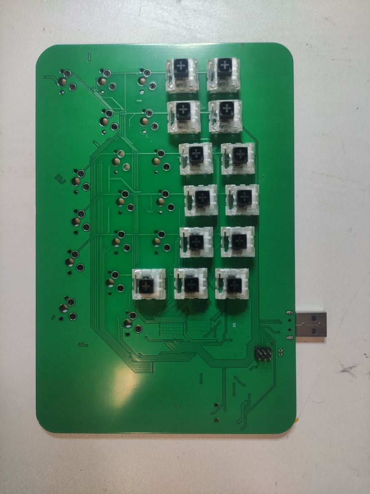

Third year had an embedded systems project: design and build a device, PCB included. We built one half of a split ergonomic keyboard. Thirty keys, per-key RGB, a board we routed ourselves. Somewhere between the soldering sessions and the first working animation, the backlight took out the microcontroller.
What follows is what I would keep in that design, what I would not, and the calculation that should have happened before we ordered the parts. The code is coursework and stays private; the wiki page linked at the end is the public record of it.
What is on the board
The KiCad project carries 112 footprints on two copper layers. Two layers was a constraint we set at the start, one for the switch matrix and one for the LEDs, and it turned out to be routable.
| Block | Part | Notes |
|---|---|---|
| MCU | ATmega32U4, 16 MHz crystal | Hardware USB, so HID needs no extra chip |
| Keys | 30 Kailh MX hot-swap sockets | Sockets are soldered, switches press into them, so a switch can be changed without an iron |
| Matrix | 30 diodes, 0603 | One per switch, against ghosting when several keys are held |
| Backlight | 16 APFA3010 RGB, 2 TLC5947 | 48 channels of 12-bit PWM, the two drivers cascaded |
| Power | MAX1811 charger, MCP1640 boost | Li-ion in, 5 V regulated out, USB as the other source |
| Link | 3.5 mm jack, AVR-ISP-6 header | UART to the other half, ISP as the programming fallback |

Why the backlight is not on the MCU
Sixteen RGB LEDs is forty-eight PWM channels. Generating those in software on a 16 MHz AVR while also scanning a matrix and running a USB stack would have taken the whole semester. The TLC5947 does it on its own: 12-bit PWM generated internally at roughly 30 kHz, and the MCU only has to shift in a frame.
Two drivers are cascaded so one frame covers both. The MCU sends forty-eight channels of twelve bits, most significant bit first, starting from the last channel of the far chip, then pulses the latch line. From tlc5947.c:
for (int8_t c = NUM_CHANNELS - 1; c >= 0; c--) {
uint16_t value = pwm_buffer[c];
for (int8_t b = 11; b >= 0; b--) {
if (value & (1 << b)) PORTB |= (1 << PB5);
else PORTB &= ~(1 << PB5);
PORTD |= (1 << PD0); // SCLK high
PORTD &= ~(1 << PD0); // SCLK low
}
}
PORTD |= (1 << PD6); // XLAT
PORTD &= ~(1 << PD6);That is the whole driver: 576 bits and a latch pulse, with no timer and no interrupt involved. The frame is about 72 bytes, and at the rate the animation refreshed it cost nothing I could measure. This is the decision I would keep exactly as it is.
The backlight current, and the resistor that decided it
A TLC5947 is a constant-current sink. One external resistor per chip sets the current for all twenty-four of its channels, and the datasheet relation is this:
IOUT = (VRIREF / REXT) * 31.25 VRIREF = 1.2 V typical
REXT = 1.97 kOhm -> ~19 mA per channel -> 48 channels ~ 0.9 A
REXT = 3.3 kOhm -> ~11 mA per channel -> 48 channels ~ 0.55 A
what we designed the supply around: ~300 mA at 5 V for the whole boardWe fitted 1.97 kΩ on both IREF lines. For a single LED, 19 mA is reasonable. For forty-eight channels at once it is about 0.9 A, against a supply sized for roughly 300 mA for everything. During testing, with the brightness turned up, the ATmega32U4 died. It took us a while to accept that the chip itself was gone, and the confirmation was desoldering it and fitting a new one.
The fix was two resistors. 3.3 kΩ puts each channel near 11 mA, and nothing heats up any more. The firmware then deals with the colour imbalance, because the APFA3010 datasheet shows red being weaker than green and blue at the same current:
// according to the datasheet, reds are much weaker than blues and greens
tlc_set_led(i, r >> 1, g >> 4, b >> 4);The margin is still thin, and it is worth writing down. At 11 mA per channel, sixteen LEDs at full white is around half an amp, which is still above the 300 mA we designed for. The board gets away with it because the animation never drives every channel to full. That is a workaround. A second version needs the resistor chosen from the power budget first, and for a 5 mA target that is about 7.5 kΩ.
The matrix, and the two microseconds
Five rows and six columns is eleven pins instead of thirty. They are spread across four ports, which looks untidy in the source but was a routing decision: columns on PORTF, rows on PORTC, PORTB and PORTD, chosen so the traces could actually leave the MCU on two layers. Four of those PORTF pins are JTAG pins, so the init disables the JTAG interface to get them back.
Debounce is a shift register per key. Eight equal samples in a row change the state, and anything in between leaves it alone:
debounce_state[r][c] = (debounce_state[r][c] << 1) | (raw_state ? 1 : 0);
if (debounce_state[r][c] == 0xFF && !matrix_state[r][c]) matrix_state[r][c] = true;
else if (debounce_state[r][c] == 0x00 && matrix_state[r][c]) matrix_state[r][c] = false;There is one line in the scan loop I have not fully explained, and I would rather write it down than tidy it away:
select_row(r);
// Keyboard doesn't doesn't work without this for some god forsaken reason
// hypothesis: wait a tiny bit for the voltage to drop (capacitance on the lines)
_delay_us(2);Without that delay the scan reads keys nobody pressed. My explanation is the one in the comment: the row has to actually fall, and with thirty diodes and long traces on both sides there is enough capacitance for the column to be read too early. I have never measured it. The delay costs nothing, so it stays.
The rainbow knows where each key is
The animation sweeps hue. The usual way to do it numbers the LEDs left to right, which means the gradient follows the channel index. The channel order on the drivers has nothing to do with where the LEDs sit on the board, so that version looks scrambled once it is built.
I took the x and y coordinates of all sixteen LEDs out of the KiCad placement and put them in main.c. Each LED's hue is the global hue plus a weighted offset from its position:
float hue = global_hue
+ alpha * (led_positions[i].x - x_ref) // alpha = 0.5
+ beta * (led_positions[i].y - y_ref); // beta = 0.3Adding an LED then means adding one coordinate pair instead of re-deriving an order. It is the part of the firmware I like most.
Soldered on the wrong face
The switches went onto the opposite side of the board from the one the layout assumed. Reworking thirty sockets was one option. Mirroring the keymap table in firmware was the other, and we took that one, with an apology left in the source:
// KEYBOARD DEFINITION HERE.
// IT'S MIRRORRED BECAUSE WE MESSED UP THE FACE ON WHICH WE PUT THE BUTTONS
// SORRY.The table maps the matrix to the left half of an AZERTY layout, escape and the number row along the top, modifiers down the thumb column. One entry is not a key code but a sentinel that the report builder turns into the left-control modifier byte, so that key behaves as a modifier. The report itself is the standard HID boot keyboard report, which caps it at six simultaneous keys plus modifiers.
The link to the other half
The two halves talk over a 3.5 mm jack using the MCU's second UART at 115200 baud. A packet is a start byte, a command, a length, the payload, and a checksum that is a plain sum modulo 256. The thirty bits of key state pack into four bytes, so a full matrix update is nine bytes on the wire.
0xAA | cmd | len | data[len] | checksum cmd 0x01 = matrix, len = 4The transmit side runs every fifty loop iterations. The receive side is a byte-at-a-time parser with a length guard, and it checks the checksum before accepting anything. The step that never happened is the merge: the received matrix is not folded into what goes out over USB, and that place in the source is a literal //TODO. The other half was built by another group, and we never got the two boards working together on a desk. So this project is one working half with a link that is implemented on both ends and unused.
We may build a tidier second version some day. Reading this repo already says what would change: choose the IREF resistor from the power budget, keep the drivers and the hot-swap sockets, and finish the merge before wiring up a second board.
If you are building something like this
- • Work out what the driver draws before you order parts. On the TLC5947 one resistor decides it for twenty-four channels at once.
- • Let a dedicated chip generate the PWM. It gave the MCU back entirely, and the frame cost nothing.
- • Hot-swap sockets turn a soldering mistake into a short job, and the switches survive into the next project.
- • A layout error can be cheaper to fix in firmware than at the bench, but it leaves a comment in the source permanently.
- • Finish the merge between two boards before building a third thing on top of it.
Further reading
- The project wiki page: the full hardware write-up in French, including the power section and the dated build log.
- TLC5947 datasheet: the 24-channel driver, the IREF relation, and the frame format.
- LUFA: the AVR USB stack the HID layer sits on.
Keep reading
The code for this board is coursework and stays private. The wiki page above is the public record of it.
Where this fits: A split mechanical keyboard, designed and built in the portfolio.